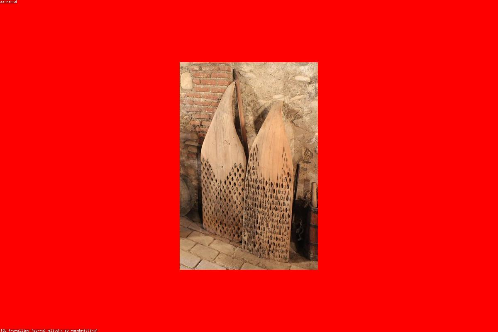

Грузинская кухня · мангал · парк Свердлова
Ресторан в парке, где встречаются дым мангала, домашнее вино и настоящее грузинское «гамарджоба». Каждый гость здесь — дорогой гость.
ჩვენ შესახებ · о месте
«Джани» по-грузински значит «дорогой», «милый сердцу». Так в Грузии обращаются к самому близкому человеку — и так мы относимся к каждому, кто переступает наш порог. Мы открылись среди старых деревьев парка Свердлова, чтобы вы могли услышать шелест листвы за бокалом саперави и почувствовать дым мангала ещё на подходе.
Наши стены — натуральный камень и тёплое дерево, на столах — глиняные кувшины, а на кухне — повара, которые готовят так, как готовили их бабушки в горных деревнях. Хлеб мы печём в тандыре, мясо жарим только на углях, а вино наливаем из квеври. Приходите большой компанией — за грузинским столом всегда найдётся место ещё для одного дорогого гостя.

отзывы гостей
Хинкали — лучшие в городе, бульон прямо внутри! Сидели в зелени парка, играла грузинская музыка, ушли счастливыми. Вернёмся обязательно.
Шашлык из баранины тает во рту, вино из квеври — отдельная история. Персонал встречает как родных. Атмосфера настоящего грузинского застолья.
Заходили после прогулки по парку — остались на весь вечер. Хачапури по-аджарски огромное и невероятно вкусное. Уютно, душевно, по-домашнему.
как найти
Нижний Новгород, ул. Пискунова, 40/3 — на входе в парк Свердлова, у тенистых аллей.
контакты
Бронируйте стол заранее — по выходным у нас особенно тёплое застолье.
Нижний Новгород,
ул. Пискунова, 40/3
(парк Свердлова)
Пн–Чт 12:00 – 23:00
Пт–Сб 12:00 – 01:00
Вс 12:00 – 23:00